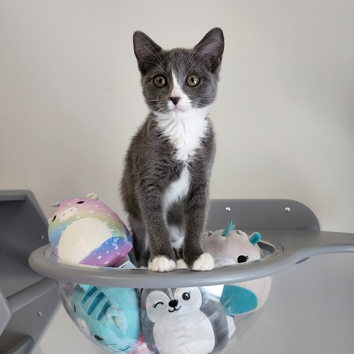

As a non-profit rescue we are always looking for people to help support our cause.
If you would like to help us out we currently need both donations and fosters.
To learn more about fostering please continue to read on.

More About Volunteering
Are you a cat lover looking for ways to give back to your community? Consider volunteering at our kitten rescue! There are a variety of ways you can help.
Foster kittens:
Fostering involves taking care of kittens in your home until they are old enough to be adopted. This can be a great way to make a difference in the lives of these tiny animals and help them find forever homes. We will provide all of the supplies needed to foster, all we ask of you is your time and a space in your home for fosters. We require a minimum of 2 foster kittens per foster in most cases. This allows for them to have a companion to socialize with.
Donate supplies:
We rely on donations of supplies such as food, litter, and toys. Consider donating these items to help support the kittens in their care.
Public Relations:
Assist in organizing unique fundraising occasions, communicate with potential donors from both individuals and corporations to contribute to The Kitten Rescue Project, and promote the cause.
Grant Writers:
We are looking for experienced grant writers to help us apply for funding. The grant writers are tasked with identifying funding prospects for The Kitten Rescue Project and composing top-notch proposals to secure grant funding. Their responsibilities include researching submission deadlines, drafting grant applications, submitting them for approval and tracking outcomes.
Spread the word:
Even if you can't volunteer directly, you can still make a difference by spreading the word about our kitten rescue on social media or to friends and family who might be interested in adopting or donating. You can use your social media presence to create a fundraiser for your birthday on Facebook or find other creative ways to help us get more exposure.
No matter how you choose to get involved, volunteering can be a rewarding and fulfilling experience. Contact us today to learn more about how you can help!